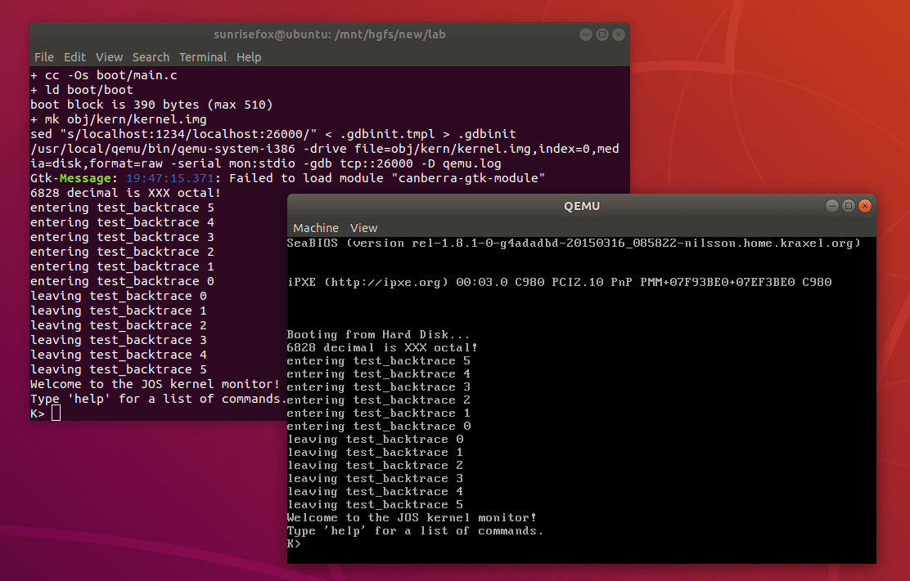

本次实验需要在 Ubuntu 16.04 及以上版本完成，本教程目标版本是 Ubuntu 18.04 LTS 且均实践通过。其他系统可能会遇到问题，适合动手能力非常强的同学尝试。
本次实验中所需的全部资源已经尽可能地放在实验工具包中供同学们在内网下载，或是提供了外网对应 IPv6 的下载方式。
所需资源在（可能不需要全部下载，按需下载即可）：
WARNING
代码和工具不对外网提供~ 文中有外网链接喵
有以下几种选择，可以参考自己最喜欢的且合适的。按照难易程度、好用程度从上到下排序。
注意: 这些操作是互斥的，完成其中一个即可。
完成后，即可继续配置接下来的环境。
注意: 这一步骤是在刚刚安装好的新操作系统中完成的，不是在 Windows 中！
进入到刚刚安装好的环境中，打开终端
参考 安装依赖，在进行接下来的操作前必须完成这一步。
同样在新系统中，安装好依赖后，参考 安装 QEMU。
我们的实验工具包里的 lab.zip 已经包含了完成本次实验所需的全部源代码，因此，本次实验中全程 不需要 使用 git fetch、git pull 等访问网络的指令。
将实验工具包中的 lab.zip 解压，并将 lab 文件夹拷贝到 Ubuntu 中，或放置在和 Ubuntu 共享的文件夹中，即准备好了实验所需的源代码。
打开 lab 目录下的 conf 目录下的 env.mk，修改最后一行，注意务必去掉最前面的 # 号，将其改为之前安装 QEMU 时所指定的安装目录，默认为 /usr/local/qemu/bin/qemu-system-i386
修改好后，应该是这样的：
返回到 lab 目录，执行 make qemu （选用 WSL 的同学需要替换为 make qemu-nox），如果一切正常，将能够看到下面的界面（WSL 有所不同）：

如果一切顺利，恭喜，你已经完成了实验所需环境的部署，可以继续向着更远的地方前行了~ 开始我们的实验吧！。
如果很不幸遇到了一些问题，可以参考我们的 常见问题解答。